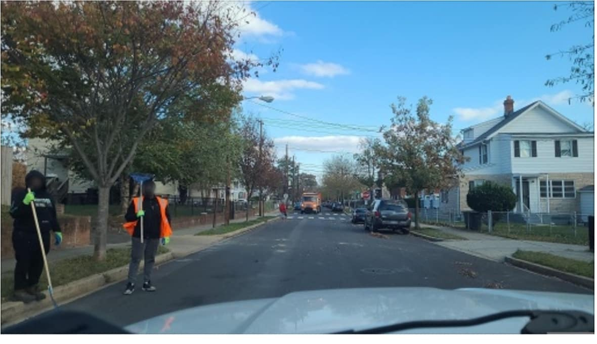
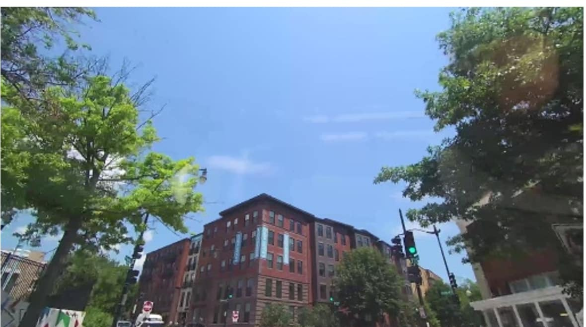
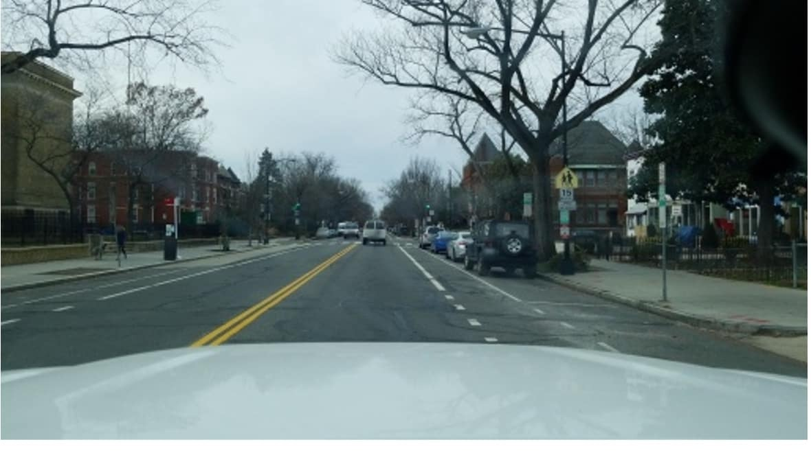
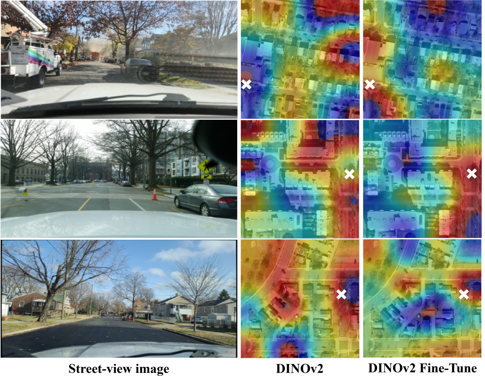
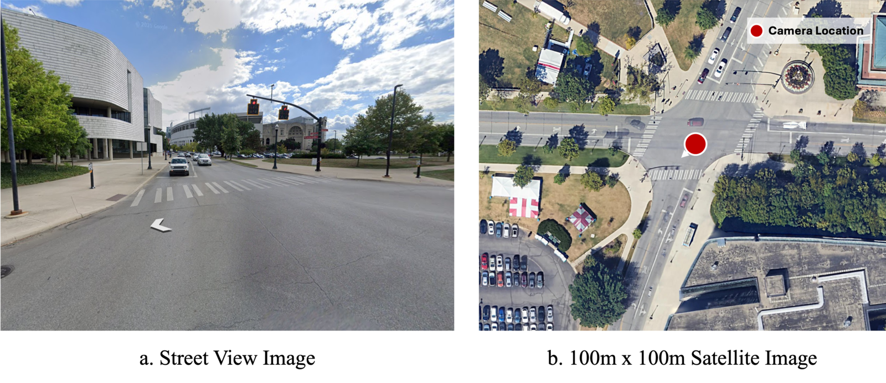
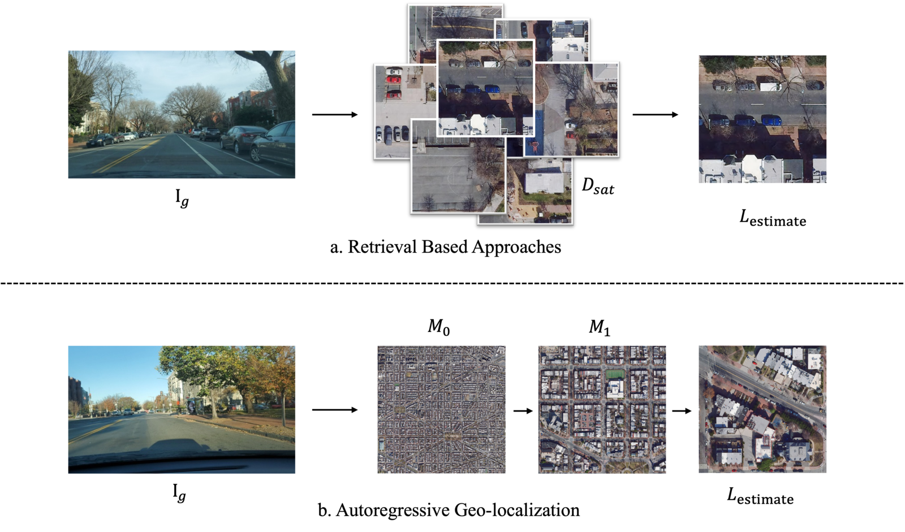
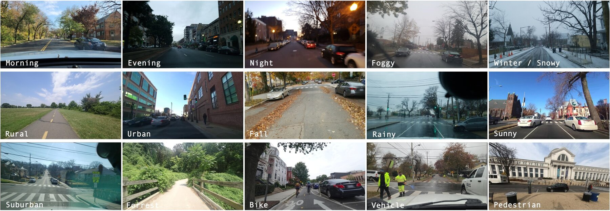
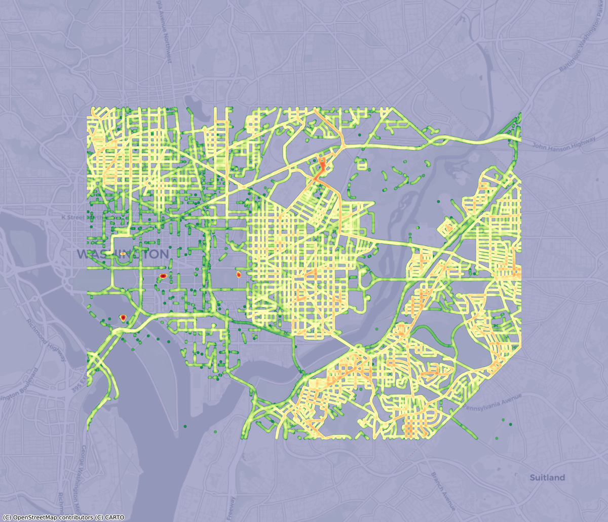

Cross-View Geo-Localization via Autoregressive Zooming
Find where a photo was taken — no GPS, no million-tile database search, just four zoom-in steps over a satellite map.
Watch the model collapse a 10 km × 10 km region down to a 156 m × 156 m tile in four zoom-in steps.



Cross-view similarity heatmaps overlaid on the satellite view show where the model believes the photo was taken. Warm colors mark high similarity to the street-view query; the white × marks the ground-truth GPS location. The hot region lands directly on it — even with no panorama, no GPS prior, and limited field of view.

GPS isn’t always available — jammed, spoofed, blocked by terrain, or just unreliable in dense urban canyons and forested environments. Just Zoom In localizes a single photo against publicly available satellite imagery, with a tiny inference footprint that fits on the edge.
Recover position from on-board cameras when GPS is jammed, spoofed, or unavailable — over cities, forests, or open terrain.
Visual fallback for GPS dropouts in tunnels, urban canyons, and parking structures — matched directly against satellite maps.
Pinpoint where a victim’s photo, dash-cam frame, or witness image was taken — without metadata, GPS, or panoramas.
Conventional cross-view methods treat the world as a flat database of satellite tiles and pick the closest match by similarity. That requires millions of stored embeddings, expensive nearest-neighbor search, and a contrastive training pipeline with hard negative mining.
Just Zoom In reformulates the problem as autoregressive zooming. The model starts from a wide satellite view and, at each step, picks one of 16 sub-patches to zoom into. After four steps, it has narrowed in on a 156 m × 156 m tile — the predicted location.
The architecture is intentionally simple: a shared DINOv2 vision encoder for both street and satellite views, plus a small causal transformer that predicts the next zoom action. No contrastive loss. No hard negative mining. No database scan.
A street view often sees landmarks that fall outside the satellite patch it’s matched against. Retrieval models trained on isolated tiles never learn this multi-scale context. Zooming does.


(a) Retrieval-based. Encode every satellite tile, store all embeddings, search for the nearest one to the query at inference. Linear in database size.
(b) Autoregressive zooming (ours). Sequential, coarse-to-fine zoom-in decisions. Cost scales with the number of zoom steps — not the size of the map.
Existing datasets use 360° panoramas with known orientation — conditions you never get from a real phone, dash-cam, or drone. We built a new benchmark with crowd-sourced street imagery from Mapillary across Washington D.C., paired with government high-resolution orthophotos. ~300,000 street-view images spanning weather, season, time of day, and camera type.


On our benchmark, Just Zoom In beats the strongest contrastive-retrieval baseline (Sample4Geo) on every Recall threshold, while using 43% less inference memory and 42% less training time.
| Method | Within 40 m ↑ R@40m |
Within 50 m ↑ R@50m |
Within 100 m ↑ R@100m |
Inf. memory ↓ GB at inference |
Train time ↓ A6000 GPU hours |
Needs HNM? hard negative mining |
|---|---|---|---|---|---|---|
| SAIG-D | 39.36 | 47.52 | 64.17 | 18 GB | >90 h | Yes |
| TransGeo | 45.97 | 54.55 | 67.61 | 11 GB | >90 h | Yes |
| Sample4Geo | 52.85 | 60.81 | 71.30 | 16 GB | >90 h | Yes |
| Just Zoom In (BS 128) | 55.74 | 66.31 | 80.93 | 9 GB | 52 h | No |
Recall@1 within τ meters on our multi-scale benchmark. Inference memory is the peak required to store and search the reference database. Training time on a single NVIDIA A6000.
@inproceedings{erzurumlu2026zoom,
title = {Just Zoom In: Cross-View Geo-Localization via Autoregressive Zooming},
author = {Erzurumlu, Yunus Talha and Kwag, Jiyong and Yilmaz, Alper},
booktitle = {IEEE/CVF Conference on Computer Vision and Pattern Recognition (CVPR)},
year = {2026}
}